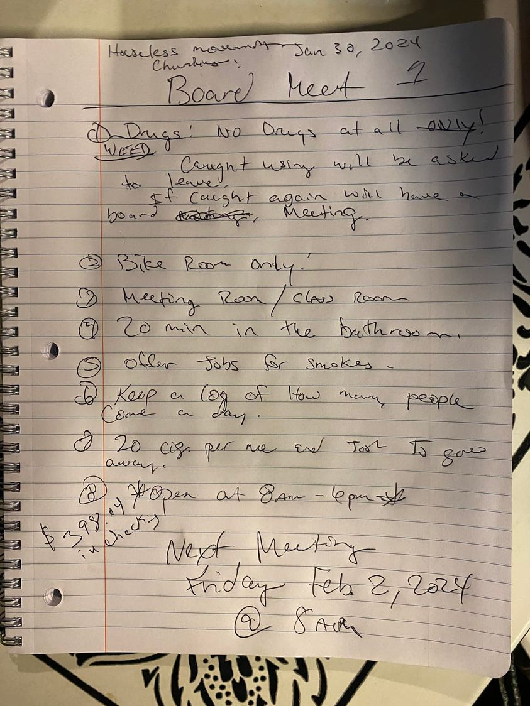

Mobile uploads
We are in the process of starting a new charity. It’s not official yet. But if the paperwork comes through it will be called Houseless Movement Charity.
My vision is that it will be homeless-run with a mostly homeless board.
The initial board members in the founding bylaws are me, Josh Sanders and Kristyn Good.
We had our first board meeting yesterday. These are the notes from the meeting if you want to look them over. Kristyn was the secretary.
What I wanted to point out is the very first issue the board wanted to address: the use of illegal drugs.
Both Josh and Kristyn were very adamant about a no illegal drug policy.
I find that so interesting because it flies in the face of people who think homeless people don’t go to shelters because they can’t do drugs.
Here are two homeless people who use drugs and they want a place where illegal drugs are not allowed.
Why is that?
It’s simple. They want to be in a more positive environment.
I was the one who didn’t really care if people used drugs or not. As our place becomes more open to the public I felt like it could be an issue for outsiders to see people smoking meth or shooting fentanyl. So my idea was to have a secret room. But they voted that down too. They felt it was going to lead to all sorts of issues. They’re right.
We talked a lot about how we didn’t want to make this a judgmental thing. We aren’t accusing people of doing anything “wrong.” It’s just that we don’t do that here.
If a person is found using illegal drugs they will be asked to leave for the day.
They also voted on having a 20 minute time limit in the bathroom. That also is primarily a drug issue. People like to shoot up in bathrooms. We only have one bathroom. And sometimes it takes a long time to find a good vein. Other people have to use the bathroom too.
I just find it so interesting how homeless people will run an organization if you let them. Our tent city was homeless run and also drug free. We made people do actual drug tests, much to my dismay.